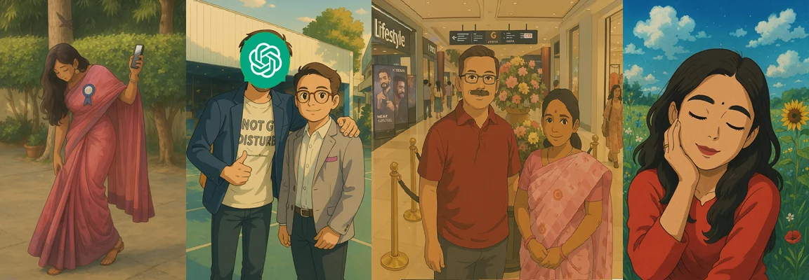
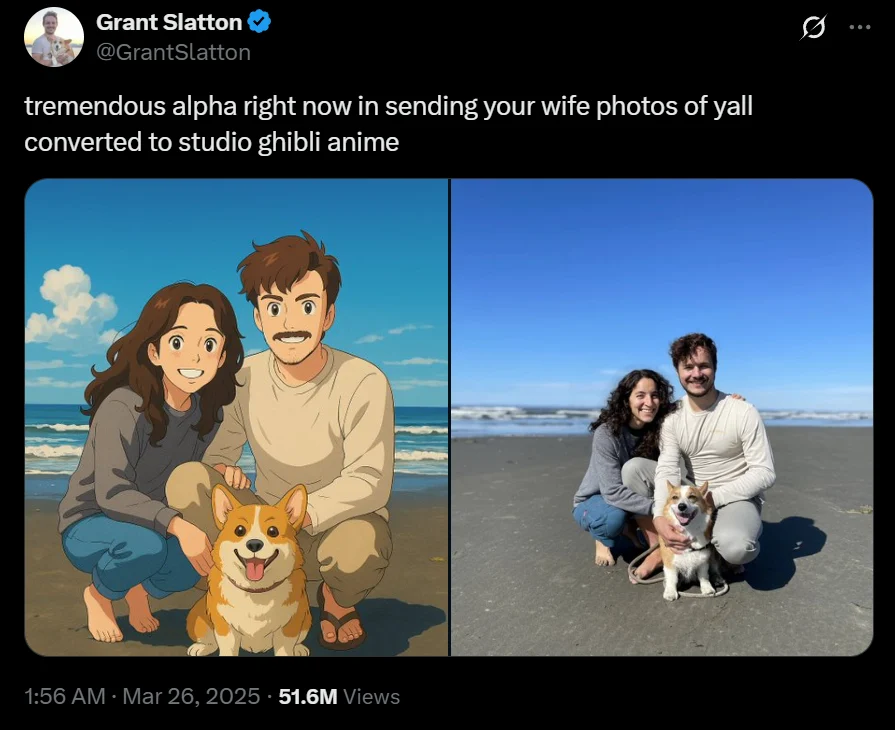
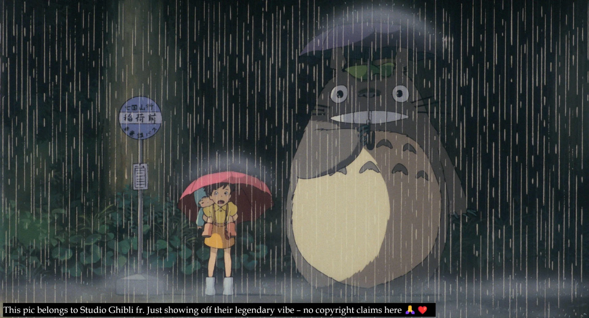
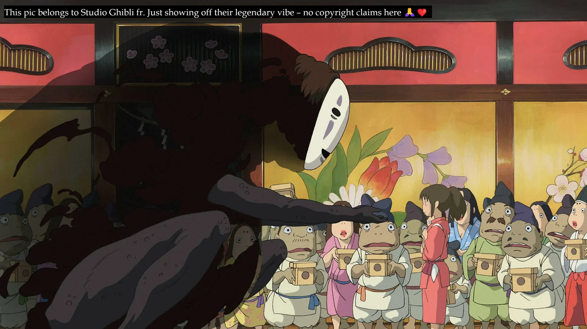
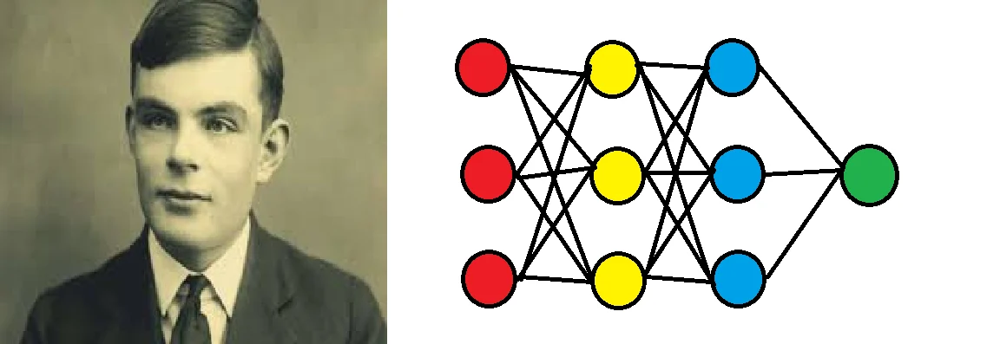
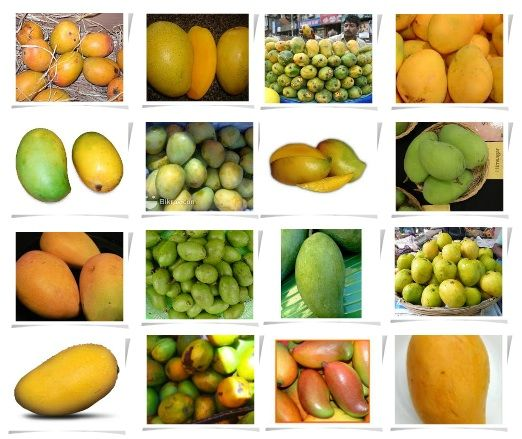
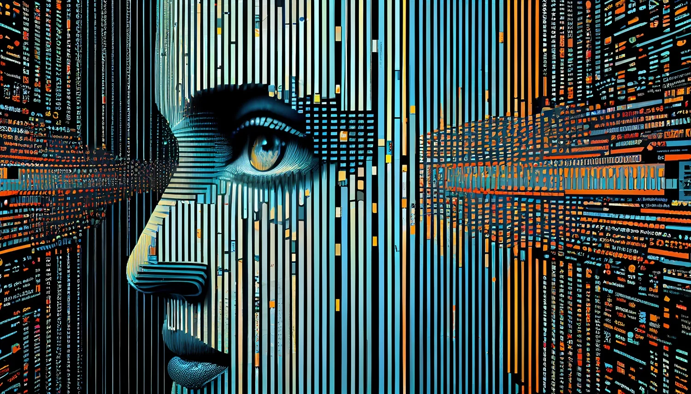
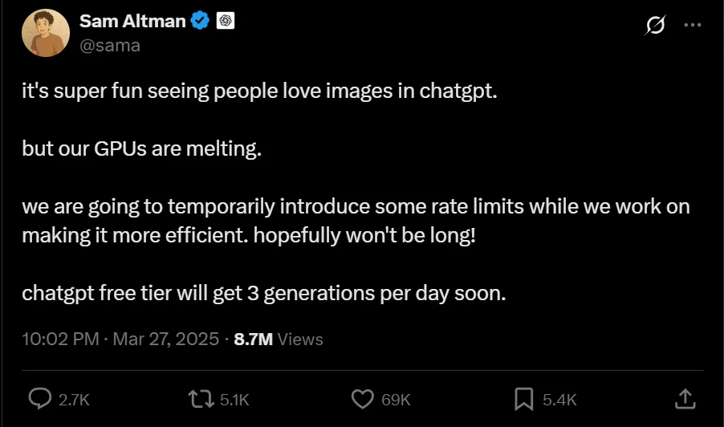
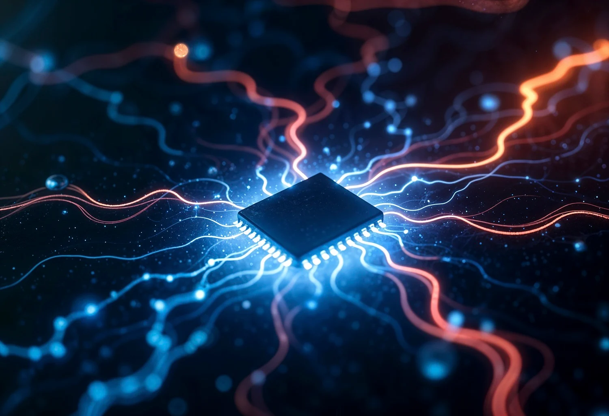

“Wanna make some Ghibli Art?” “Hey! Can you Ghiblify this?” “Bro, check out this anime-style portrait I created!”
You’ve probably heard or seen posts like these if you're even mildly active on social media. And even if you're not, it’s almost impossible to miss the Ghibli Art Trend that took over the internet within just a month.
Yes, it's that trend — the one that got your friends, family, and even celebrities going wild over generative AI and its insane capabilities. It's the very reason your feed is now overflowing with cartoonish, dreamlike portraits of people.

The Ghibli Trend: The Artstyle Shaking the Internet
It all began when Seattle-based software engineer Grant Slatton posted an AI-transformed photo of his family on X (formerly Twitter).

His caption read:
“Tremendous alpha right now in sending your wife photos of y’all converted to Studio Ghibli anime.”
This came shortly after OpenAI introduced its upgraded image-generation tools — and boom, the post went viral.
It instantly caught the attention of anime-loving youth, sparking a global wave of teenagers recreating their portraits in the Ghibli art style using AI. But it didn’t stop there — the trend quickly spread to the masses: from elderly parents to billion-dollar brands like Zomato and Swiggy, and even celebrities like Parineeti Chopra, Raghav Chadha, and Rakul Preet Singh — not to mention high-profile figures such as PM Modi and Elon Musk.
The art style — with its soft colors, nostalgic vibes, and simple, nature-connected designs — captivated people instantly. It evokes a longing for a peaceful, simpler time, especially the kind we experienced in childhood. Many, especially from the older generation, crave the tranquility of a gadget-free countryside — one brimming with trees, bustling with folks and fauna. That distinct smell of wet earth, the soft rustling of trees, and the vibrant crackle of village life — all come rushing back. The Ghibli art style awakens those memories and lets you feel, see, and hear them all over again. That’s exactly what makes it so unique — and so irresistible.

Ghibli Art Studio: The Legend of Japanese Animation
Studio Ghibli is a renowned Japanese animation studio based in Koganei, Tokyo. It holds a powerful presence in the animation world and has expanded its creative footprint to include short films, television commercials, and even two TV movies. Over the years, its works have been celebrated by audiences globally and recognized with numerous prestigious awards.
The name “Ghibli” comes from the Italian word for the hot Sahara wind, symbolizing the studio’s aim to “blow a new wind through the anime industry.” And well — blow through it they did, sweeping across the globe with their unforgettable storytelling and art.
Founded in 1985 by legendary animator and filmmaker Hayao Miyazaki, alongside director Isao Takahata and producer Toshio Suzuki, the studio would go on to redefine what animation could be. (Starting from left: Hayao Miyazaki, Isao Takahata and Toshio Suzuki)
The studio has produced more than 22 animated art works, which include feature films, short films, and commercials for television. Takahata and Miyazaki met for the first time in the 1960s while they were both employed at the Japanese animation studio Tôei Dôga. They collaborated for over ten years, but it was in the mid-1980s that they made the choice to establish their own company. In 1985, with backing from the publishing company Tokuma Shoten in Tokyo, Takahata, Miyazaki, and Suzuki initiated Studio Ghibli, a small studio located in the outskirts of Tokyo. This same Studio Ghibli has created 15 of the top-grossing anime films in Japan.
Here is list of their works, incase I got you intrigued: (According to IMDb)
🎬 Notable Works by Studio Ghibli:
All these are considered to be some of their best works. Some other honourable mentions are “Kiki's Delivery Service,” 1989 and “Howl's Moving Castle,” 2004.

🎨 How to Create Your Own Ghibli-Inspired Art:
Visit ChatGPT.com – Log In to your account and open a new chat.
Upload Your Photo – Attach the image you want to transform into Ghibli-Style-artwork.
Enter the Prompt – Use creative and descriptive prompts for best results. While simple prompts work, the following format tends to produce outstanding outcomes:
\"Studio Ghibli style portrait of a person, soft colors, natural lighting, anime-style brush strokes, detailed background, warm and nostalgic atmosphere\"
Let the AI Work Its Magic – Wait a few seconds while the image is generated.
Download and Share – Save your image and feel free to share it across your socials!
Heated Debates: Why Are Netizens Divided?
Two major debates are currently sparking conversations across the wired village. On one side, art enthusiasts are concerned that AI-generated art may diminish the value and legacy of iconic studios like Ghibli. On the other, the tech-savvy crowd is raising questions about privacy and the vast amounts of data being collected from everyday users.
🎨 Art vs AI: A Creative Dilemma
The artistic community largely stands against this trend, arguing that it disrespects the studio’s legacy and reduces years of painstaking work by skilled animators into a casual, instant aesthetic. Some claim it's a mockery of the intricate craft that takes years to master.
My perspective? This style should be referred to as a \"Ghibli-like\" art style rather than directly associating it with the original studio. After all, AI-generated images are recreations based on patterns and datasets used to train the model (we’ll explore that in more detail shortly). It can mimic the look, but it can never truly capture the soul of original Ghibli works—the emotion, the storytelling, the magic that breathes life into every frame.
At the same time, this trend could also serve as a gateway for new audiences to discover Studio Ghibli’s films, potentially boosting their visibility and improving their financial support.
🔒 Fun Trend or Privacy Breach?
While the public is busy experimenting with AI-generated portraits, industry experts and tech leaders are voicing serious concerns. The core issue? Users are uploading large amounts of personal visual data, which, if mishandled, could lead to alarming consequences—such as data being sold on the dark web, the creation of deepfakes, or unauthorized profiling based on facial features and digital behavior.
In the digital age, data is everything—and the risks tied to it are real.
We’ve explored the trend and its artistic roots, but now it’s time to step into our zone: the tech behind the magic. How does ChatGPT generate such stunning visuals? What exactly is Generative AI, and how does it work under the hood?*
Let’s break it down!
From Code to Canvas: The Rise of Generative AI
🧠 Dive into the History of AI
The human mind’s craving for automation and artificial life isn’t a modern phenomenon — it dates back to ancient legends and myths.
Take Daedalus from Greek mythology, for instance. He’s known for designing the Labyrinth and crafting wings for himself and his son Icarus to escape Crete. But beyond that, Daedalus was also credited with creating moving statues, self-operating devices, and automata — mythological, of course, but symbolically, he’s considered a proto-engineer or the mythical father of robotics and automation.
Then comes Hero of Alexandria, who designed the Aeolipile — the first recorded steam engine. His inventions included self-moving mechanisms and even programmable machines, making him one of the earliest real-world pioneers of mechanical automation. Centuries later, those seeds would evolve into the digital and intelligent systems we now call AI.
Stepping into the real world…
In the 1950s, Alan Turing dared to ask, “Can machines think?” and laid the first stone of the AI revolution by proposing the Turing Test — a method to evaluate whether a machine can imitate human responses well enough to pass as intelligent. This sparked a global curiosity, and soon researchers began experimenting with various ways to simulate human intelligence. Some of the earliest attempts came in the 1950s and 60s, using if-else rules to program logic and decision-making.

From the 1990s to 2010s, the focus shifted to Machine Learning (ML) — where models didn’t need rules hard-coded but could learn patterns from data and build their own decision paths. Then came the breakthrough: Neural Networks, which gained popularity after 2010. These systems were inspired by the human brain and could absorb vast amounts of data to recognize patterns, powering tools like image classifiers, voice assistants, and language translators.
But 2014 changed everything — Generative Adversarial Networks (GANs) were introduced by Ian Goodfellow, allowing machines to create. From generating realistic faces (This Person Does Not Exist), to art styles, and even deepfakes, GANs sparked the beginning of artificial creativity.
In 2017, the arrival of Transformers gave birth to a new era. These models could understand context in language like never before, leading to the rise of BERT, GPT, and eventually ChatGPT, which could write, reason, and talk almost like a human.
Finally, in the 2020s, Generative AI (GenAI) became a household name. Tools like DALL·E, Stable Diffusion, Midjourney, and ChatGPT made it possible to create text, images, music, code, and even videos, all from a simple prompt — flooding the internet and opening a new chapter in human-tech collaboration.
🤖AI Models: Giving Life To Code
Here we are gonna discuss the learning process of AI.
Imagine a kid learning to identify mangoes. At first, they’re simply shown lots of mangoes — yellow ones, green ones, big ones, small ones — until they start to form a mental image of what a “mango” is. That’s the training phase.
Next, we mix in apples, oranges, and bananas and ask: “Is this a mango?” Every time the kid guesses right, they’re praised. If they mess up, they’re corrected. Slowly, they refine their concept. That’s the testing and feedback phase.

Now take this trained kid to a fruit shop in another country — new lighting, different mango breeds — and boom, the kid can still pick out the mangoes. That’s generalization — applying what was learned to unseen data.
That’s exactly how AI learns. It starts with data, forms patterns, gets feedback, and slowly becomes good enough to handle things it’s never seen before.
Coming to different types of Machine Learning models, we have three major types:
Decision Tree: The classic "if-else" logic — great for straightforward decisions. It asks a predefined list of questions like:
“Is it yellow?”
“Is it sweet?”
If yes, then boom — "It's a mango!"Linear Regression: Predicts based on trendlines. For example, older people tend to be taller, so based on age, we can predict that a 23-year-old will be taller than an 8-year-old.
Neural Network: Inspired by the human brain — a web of artificial “neurons” that learn patterns from data. This one’s a game-changer. Unlike decision trees, neural networks evolve. The questions aren’t fixed — they adapt and grow more complex as new patterns emerge.
You can think of neural networks as a group of smaller AIs, each learning different aspects of the same problem. Together, they collaborate, refine, and evolve the questions they ask — often discovering connections beyond human intuition.
Quick Discussions: Decision Tree v/s Neural Networks
These are the building blocks. And GenAI? It's the masterpiece built on them.
🎨Generative AI: Miracle Of the Silicon World
Generative AI are special type of AI models, which are particular trained to entirely new data, which resembles the patterns it learnt from the dataset provided to it. As we already saw the multitude of appplications it have. Traditionally, there are two types of AI.
Discriminative AI—used to classify and cateorize data. Eg- gets it is trained to identify cat using big dataset of cat images. Then it would be capable to identify new images of cat it haven’t seen before.
Generative AI—used to create new data using previous data.

“Image by vecstock on Freepik”
Till now we discussed that neural networks find patterns. Now we will talk about, the technique used to learn those patterns. (The types of neural network Models)
GAN (Generative Adversirial Netwokrs): The most prominent model used for GenAI. It works using a generator and discriminator. The generator try to generate new data, like image, text, voice etc using the given dataset, while the discriminator tries to understand or classify them according to the given data. Then the discriminator sends data to the generator which learns how closely it created the data resembling the original material. Then the generator improves. Mostly used for deepfakes, voices, image etc. Eg - CycleGAN
Poetic Analogy
Diffusion Models: It takes a image, then add layers of noise to it (damages it) then tries to denoise it back to original (fixes) and find patterns. Then we provide it with photos with just noise and it removes the noise in such a way that it forms the original images. It is used for images because it develops intricit relations among the pixels. Eg - DallE and Midjourney.
Poetic Analogy
Transformer Models: Transformers are a type of neural network architecture designed to handle sequential data, but unlike earlier models, they do so without relying on sequence order. Instead, they use a mechanism called self-attention, which allows the model to evaluate the importance of each part of the input relative to the others. Eg- ChatGPT.
Poetic Analogy
What’s the Difference Between Generative AI and ChatGPT?
Generative AI is a broad category of artificial intelligence focused on creating new content — whether it’s text, images, music, videos, or even simulations. It relies on powerful models like Large Language Models (LLMs), GANs, and diffusion models, all trained on huge datasets to generate original and creative outputs.
ChatGPT, on the other hand, is a specific tool built by OpenAI that falls under the generative AI umbrella. It’s based on a Large Language Model called the Generative Pre-trained Transformer (GPT). Originally designed for conversations, ChatGPT can now also generate images, write code, and more — but its core strength still lies in producing human-like text and engaging in natural conversations.
To put it simply:
Generative AI is the broader field focused on creating content using AI.
ChatGPT is a particular example of generative AI, mainly known for its natural language skills.
Sam Altman’s Tweet: Heated Hardwares
Open AI’s CEO Sam Altman tweeted “can yall please chill on generating iamges this is insane our tema needs sleep” on 30th March in response to the Ghibli Trend.
Another tweet was done by him which read “it's super fun seeing people love images in chatgpt. but our GPUs are melting. we are going to temporarily introduce some rate limits while we work on making it more efficient. hopefully won't be long! chatgpt free tier will get 3 generations per day soon.“

Did the thought “AI is a software isn’t it“ came to your mind? Why are the hardwares melting. Offcourse, they aren’t actually melting rather overwhelmed by the heavy requests. Let’s see understand them more.
From CPUs to NPUs: The Saga of AI Acceleration
When the AI sector was just a bud, general-purpose CPUs carried the weight of all computations. But as AI began to grow, the limitations of CPUs became evident—they simply lacked the parallel processing muscle needed for complex tasks.
“Think of CPUs like a fast chef working alone. Efficient for simple meals, but overwhelmed if asked to cook 50 dishes at once.“
This led to the rise of multi-core and heterogeneous computing, with pioneers like IBM’s Cell processor combining general-purpose cores with specialized elements for parallel workloads.
“This was like bringing sous-chefs to help the main chef—each handling specific parts of the meal.”
Then came the GPU revolution—parallel powerhouses originally built for graphics rendering, now repurposed for AI. Their ability to perform massive parallel mathematical operations made deep learning practically possible.
“Now you have a kitchen full of chefs, each making small parts of the dish at once — super fast and efficient for big recipes (like training neural networks).“
But even GPUs had their flaws—high power consumption and a design not purely optimized for AI. That’s when Neural Processing Units (NPUs) emerged. Purpose-built for neural networks, these chips brought unmatched speed, energy efficiency, and edge-readiness to AI acceleration.
“NPUs are like robotic arms built only to cook a specific dish — not flexible, but insanely good at that one thing. Perfect for embedded or mobile devices where energy & speed matter.“
The Age of AI Chips: Rewriting the Future of Hardware
In the final act of AI’s hardware evolution, we arrive at a new breed of silicon—AI Chips.
Unlike general-purpose processors or even specialized NPUs, AI chips are tailor-made to run machine learning workloads with maximum efficiency, speed, and minimal power draw. They're not just accelerators—they are native environments for AI logic to thrive. From Apple's Neural Engine to Google's TPU and custom silicon in edge devices, these chips are redefining what \"hardware\" means in the age of intelligence.
But the trajectory doesn't stop there.

As these chips become more integrated into our everyday hardware—from phones and cars to appliances and wearables—they are poised to replace traditional processing units like the FPU (Floating Point Unit) and even dedicated NPUs, evolving into a unified processing system designed for intelligent computation at every level.
SO, at the end:)
Do you think AI-generated art adds value or steals from tradition? Drop your thoughts below!
Loved this deep dive? Share with a Ghibli lover or GenAI geek!
References and Disclaimer:
🔎 Curious about the sources behind this post?
Dive into the SiliconPenCitadel for full references and more!
"All AI-generated visuals featured in this article are used purely for educational and illustrative purposes. We do not claim any affiliation with Studio Ghibli or any individual depicted. No copyright ownership or endorsement is implied for any person, studio, or brand shown.
Some visuals include my own likeness and that of friends, used with full consent. Ghibli-style meme images are shared under fair use for the sake of commentary, analysis, and cultural discussion."